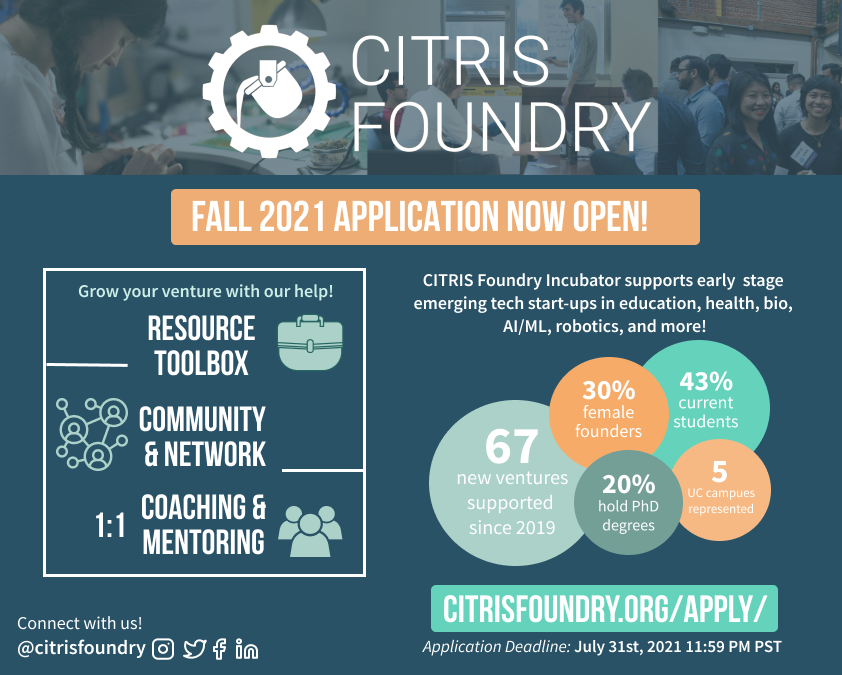

The CITRIS Foundry Incubator Fall 2021
Application is now OPEN!
June 16, 2021
Uniquely situated across multiple UC campuses, the CITRIS Foundry is ideally positioned to help new generations of innovators and entrepreneurs bridge the gap from lab to market and actualize rigorous, validated solutions to society’s biggest challenges. The Foundry offers guidance, education, and a homebase to de-risk entrepreneurship for early-stage founders, especially supporting those who have been historically marginalized, allowing innovators to confidently identify pathways to success and reach the next stage of development and investment for their emerging technology venture.
Deadline to apply: July 31st, 2021| 11:59pm PSTStart of Cohort: September 2021
